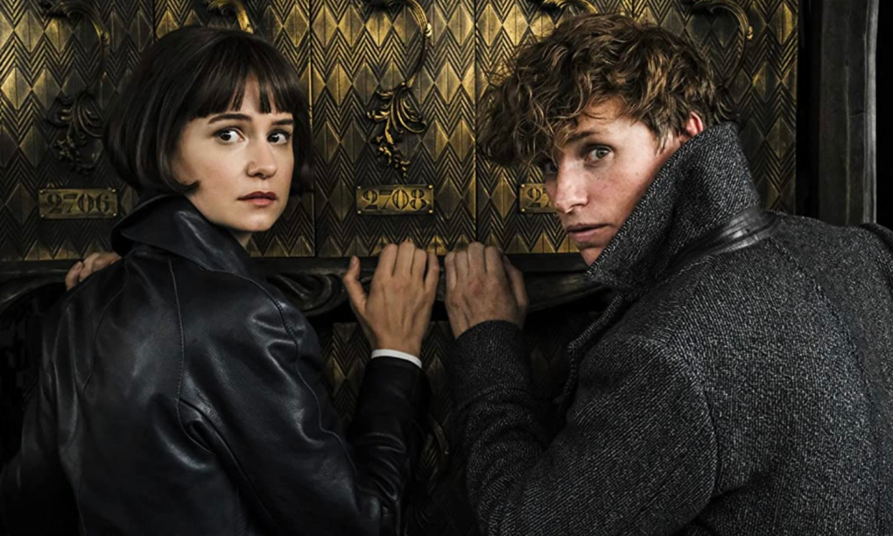
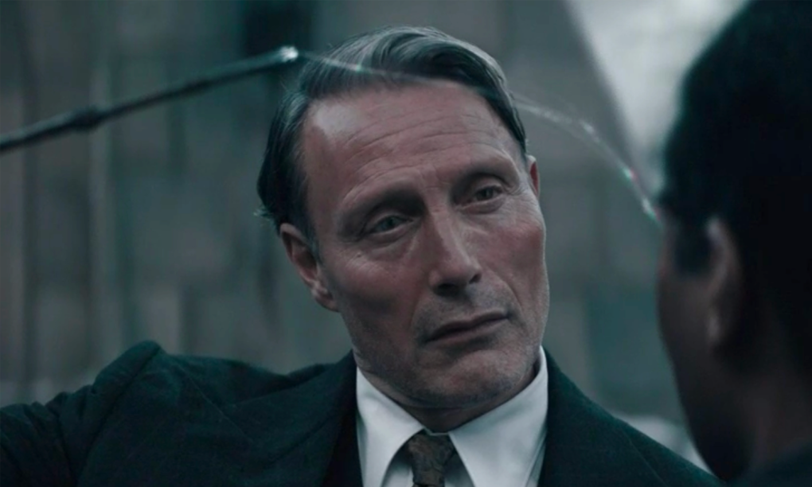

'Fantastic Beasts 3': Ẩn ức của Dumbledoren
Vì lời thề không đối đầu Gellert Grindelwald, thầy Dumbledore nhờ Newt và nhóm bạn đi ngăn chặn âm mưu chiến tranh của tên phù thủy ác độc.
* Bài viết tiết lộ tình tiết phim
Nội dung Fantastic Beasts 3 tiếp nối phần trước, khi Dumbledore (Jude Law đóng) tiết lộ lý do không thể trực tiếp ra tay đánh trả Gellert Grindelwald (Mads Mikkelsen) vì một lời thề máu giữa họ lúc trẻ.
Thầy phù thủy của trường Hogwarts tập hợp đội ngũ chống tên ác nhân gồm anh em nhà nghiên cứu sinh vật huyền bí Newt (Eddie Redmayne) - Theseus Scamander (Callum Turner), trợ lý Bunty (Victoria Yeates), phù thủy người Pháp Yusuf Kama (William Nadylam), giáo sư Lally (Jessica Williams) và thợ làm bánh Jacob (Dan Fogler).
Trailer "Fantastic Beasts: The Secrets of Dumbledore". Video: YouTube
Phim lấy bối cảnh những năm 1930, Newt Scamander đến Bhutan để đỡ đẻ cho một con kỳ lân - có khả năng nhìn thấu tương lai và tâm can người khác.
Tuy nhiên, Grindelwald cũng sai các thuộc hạ đi bắt loài động vật trong truyền thuyết cho âm mưu thôn tính thế giới phù thủy của hắn.
Newt không thể chống trả và bị lũ phù thủy ác độc hạ gục, cướp mất chú kỳ lân mới sinh.
Phe Grindelwald không ngờ rằng có tận hai cá thể kỳ lân chào đời trong tối hôm đó.
Gellert Grindelwald giết con kỳ lân bắt được để nhìn trước tương lai, sau đó dùng phép thuật hắc ám để hồi sinh nó nhằm mục đích đánh lừa Liên đoàn Phù thủy Quốc tế.
Gã cũng biết trước kế hoạch chống trả của đoàn quân do Dumbledore chỉ đạo. Biết được điều này, Newt cùng các cộng sự phải thực hiện nhiệm vụ theo cách ứng biến, với hy vọng tên ác nhân trở tay không kịp.
Phần ba Fantastic Beasts đi sâu khai thác quá khứ của Albus Dumbledore, nhân vật phù thủy quyền năng của thương hiệu Harry Potter.
Tác giả J. K. Rowling để nhân vật công khai đồng tính, với mối tình ngang trái cùng ác nhân Gellert Grindelwald. Họ từng là tình nhân, say đắm trong tình yêu và cùng nhìn về một hướng. Tuy nhiên, Dumbledore không muốn làm chuyện ác nên buộc phải quay lưng chống lại Grindelwald.

Albus Dumbledore (giữa) tập hợp nhóm để chống lại ác nhân Gellert Grindelwald. Ảnh: Warner Bros
Chi tiết Dumbledore đồng tính từng được J. K. Rowling xác nhận năm 2007 trong một sự kiện quảng bá cuốn Harry Potter and the Half-Blood Prince ở Carnegie Hall (Mỹ). Tuy nhiên, giới tính của nhân vật không được nhắc đến trong các tập phim về Harry Potter và Fantastic Beasts trước đây.
Mối tình đồng giới càng tăng thêm bi kịch cho cuộc đời phù thủy quyền lực bậc nhất của vũ trụ Harry Potter. Dù đáp trả tình cảm của Dumbledore, Grindelwald quá say đắm với khát vọng thống trị thế giới và cuộc chiến tiêu diệt những kẻ Muggle, giữ sự trong sạch cho dòng máu phù thủy thuần khiết.
Kịch bản phần ba cũng xoay quanh một số nhân vật khác thuộc nhà Dumbledore. Credence (Ezra Miller), sau khi danh tính của anh được tiết lộ là cháu của Albus, tiếp tục đóng vai trò quan trọng trong câu chuyện chính. Anh hoạt động dưới trướng Grindelwald và tìm cách trả thù dòng họ vì đã bỏ rơi mình. Phim cũng tiết lộ nhân vật Aberforth Dumbledore - em trai của Albus - sống ở Hogwarts.

Nhân vật nữ chính Tina (Katherine Waterston, trái) không xuất hiện trong câu chuyện chính của phần ba. Ảnh: Gamesradar
Fantastic Beasts 3 còn một số điểm trừ nhưng đã khắc phục được phần lớn điểm yếu của phần phim trước.
Sự góp mặt của Steve Kloves - từng viết kịch bản bảy phim của thương hiệu Harry Potter - giúp câu chuyện của phần ba đỡ rời rạc hơn. Êkíp cũng gia giảm hợp lý các tình tiết hài, kỹ xảo để tăng sự hấp dẫn. Tuy nhiên, cách kể có phần dàn trải cùng dàn nhân vật đông đảo khiến mạch phim chậm. Đồng thời, nhiều phân đoạn đòi hỏi khán giả cần lượng kiến thức căn bản về thương hiệu phim để có thể bám sát diễn biến.
Mads Mikkelsen đem đến một nhân vật Gellert Grindelwald hoàn toàn khác so với Johnny Depp. Ác nhân chính của loạt phim thể hiện được sự hào hoa, lịch thiệp nhưng cũng tàn độc, mưu mô. Hắn có biệt tài "đọc vị" và thao túng người khác. Màn hóa thân giúp tuyến phản diện có nhiều điểm nhấn hơn, cân bằng với vai Albus Dumbledore được Jude Law thể hiện tốt từ phần trước. Hai diễn viên cũng thể hiện được nội tâm nhiều mâu thuẫn khi vừa là người yêu, vừa là kẻ thù.
Cuộc chạy đua cho chức lãnh đạo tối cao Liên đoàn Pháp sư Quốc tế gợi nhớ đến màn quy tụ của các nhóm pháp thuật khác nhau trong Harry Potter and the Goblet of Fire (2005). Kịch bản tập trung khai thác cuộc chiến giữa phe Dumbledore và Grindelwald, gợi nhớ các màn đối đầu thiện - ác của thế giới phù thủy với chúa tể Voldemort. So với các phần trước, chi tiết về loài sinh vật huyền bí được nhắc đến ít hơn, nhường chỗ cho đại chiến của thế giới phù thủy.

Mads Mikkelsen trong vai ác nhân Gellert Grindelwald. Ảnh: Warner Bros
Khâu hình ảnh, âm nhạc tiếp tục là điểm sáng. Fantastic Beasts 3 có nhiều phân đoạn hành động, phép thuật đẹp mắt. Êkíp chiêu đãi khán giả hàng loạt cuộc giao tranh ác liệt giữa các phe phái hay màn đối kháng giữa các phù thủy quyền năng. Khán giả được đến với nhiều bối cảnh mới như Đức, Bhutan... Tuy nhiên, những địa điểm này chưa được khai thác triệt để tạo sự "thương nhớ" cho người xem như Hogwarts.
Bộ phim giúp khán giả sống lại những khoảnh khắc màu nhiệm của thương hiệu Harry Potter như trở lại Hogwarts, thăm ngôi làng Hogsmeade, gặp lại các quả bóng trong trò quidditch, giáo sư Minerva... Êkíp cũng sử dụng một số góc quay, nhạc nền để gợi nhớ những bộ phim cũ về thế giới phù thủy của J. K. Rowling.
Trên Rotten Tomatoes, giới phê bình đánh giá phim đạt điểm "tươi" 62% từ 78 bài nhận xét. Đa phần cho rằng phim khá hơn phần trước nhưng chưa đủ làm khán giả mê hoặc như thời Harry Potter. Khâu hành động và diễn xuất nhận nhiều lời khen song nhiều ý kiến cho rằng phim lê thê và thiếu nút thắt cao trào.
Fantastic Beasts: The Secrets of Dumbledore, ra rạp tại Việt Nam từ ngày 8/4, là phần ba tiền truyện của thương hiệu Harry Potter. Tác giả J. K. Rowling trực tiếp viết kịch bản phim. David Yates tiếp tục ngồi ghế đạo diễn. Dự án quy tụ dàn sao đa quốc tịch như Eddie Redmayne, Jude Law, Ezra Miller, Katherine Waterston, Mads Mikkelsen...
Đạt Phan